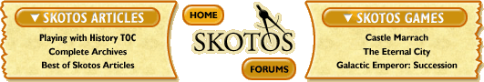

|
Sensitivities and Perceptionsby Michael Karlin "The sensitivity of men to small matters, and their indifference to great ones, indicates a strange inversion." I've changed much since the start of this column. I moved to a town built by Vikings, strolled the battered streets of a war-torn city and befriended nationals from some forty different countries. It was one of these friends that turned me on to an event that I had never previously known about. In November of 1997, outside of the Temple of Hatshepsut, the famed female Pharaoh of Egypt, 71 tourists were slaughtered by terrorists. They were Egyptian, Japanese, German and Swiss all together to marvel at the wonders of the past. It is known as the Luxor Massacre. Most commentary explained the event by citing West-loathing extremists, and a factor in such loathing is the ravaging of historical treasures by gawking tourists. This point of view, which is largely unsubstantiated, jarred me somewhat. Hatshepsut died thousands of years ago, but the symbolism of her and her kin buried in proximity to her fuels the politics of now. Echoes of the past repeat themselves in more modern times. I point to Mussolini's use of Roman imagery to exemplify my point. I once believed, and argued in this venue, that the further one goes back in history, the less tender the wounds of history are to potential players of a historical fiction game. This point is weakened, because even the symbols of ancient history can be perverted to serve the causes of today, causes that did not exist in the minds of ancient peoples. People refer, often incorrectly, to events that occurred in the distant past as a justification for actions in the present. Events that occurred generations ago are still raw in the hearts of many. This is what I call sensitivity. When researching to create a historical fiction game, don't stop at clothing, weapons and architecture. I urge you to look up interpretations that are not academic, that may be steeped in lies and misconceptions. Do this to understand what people believe, in order to predict the potential sensitivities you might drag up by selecting a particular time and place. Then, stick to your own research and beliefs despite the biases you may encounter. Challenge sensitivities diplomatically; I don’t believe that a computer game is a suitable venue for making much of a revisionist argument. Many will be playing the game without any invested interest in the historical controversy, and you don't want to scare them off by being too illustrious. A caveat: Computer gaming is still a business, so despite the challenging sensitivities point above, be reasonable. I’m under the opinion that making a historical fiction game set in 1880's Belfast would be extreme. On the Flip Side / Education through Entertainment There lies another perspective of sensitivity towards history that I want to discuss here. Sensitivities are the apparent result of differing perspectives of history clashing in an emotional tumult. History is littered with misconceptions; indeed the most cynical opine that history is simply an aggregate of misconceptions and mythology with just trappings of truth. While I tend to disagree with the last point, the honing of propaganda by state machinery has rendered history of many foreign cultures alien. We hear half-truths regularly, of "ancient animosities" or "dark periods" of a culture’s history that may or may not be true. Computer gaming, especially the in-depth role playing here at Skotos, offers an opportunity to educate through entertainment. It gives us the chance to research and recreate beautiful or turbulent periods of human development that were fascinating and can be translated into a entertaining experience without seeming like an onerous lecture. This is a tremendous forum with which we might cast light on misconceptions we have of the past, an element of knowledge we can take with us to enrich our lives beyond gaming. This makes the game more than just an engaging way to pass the hours, but a slightly more fulfilling experience. I remember walked the aisles of Gencon, seeing figurines of the Egyptian god Horus wielding a massive laser-sighted assault rifle and thinking: "Right. That's fine, but how does that contribute to anything?" I am not arguing that all computer gaming must be intellectual, but that computer gaming is an extraordinary venue to transmit history without being cumbersome about it. Again, I temper my argument with a dash of reason. Creating a game that shows the "bright side" of the Stalinist Terror in order to share your interest in that era might pique sensitivities in people to the point of being deeply offensive. It isn’t very nice to hurt people like that, nor is it good business. If you face sensitivities or controversy in your game, confront and appeal to them. Use their perspective to achieve balance in your game, but stick to your research and your interpretation in the end. Even the most historically accurate game can bring out the ire in many. Be aware of that early in the process. See you in two weeks. [ #17: The Peculiarities of Language —> ]
|